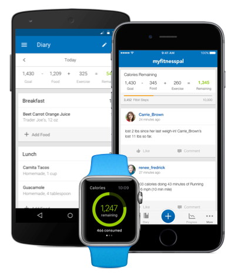
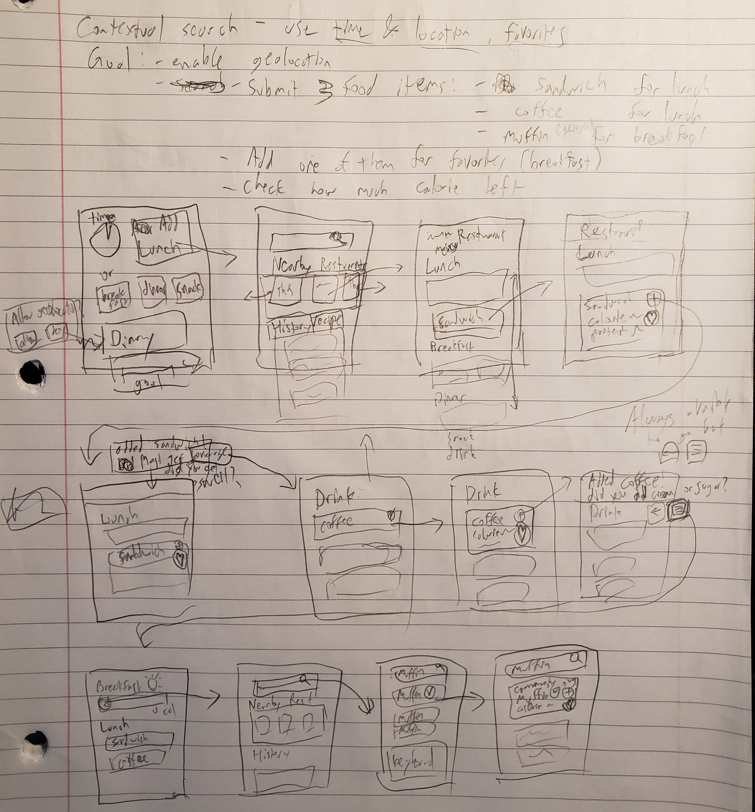

Brainstorming
The key takeaway from the contextual inquiry and modeling was to streamline the food submission process and minimalize the UI to highlight key information and tasks. I had sought to utilize many features that a mobile phone is able to have, such as geolocational information along with time of the day. In addition, I wanted to reduce the number of button presses and screens to make the submission easier and faster within a meal.
Paper Prototype

This is the final result that is to be used for evaluation.

Main Hub
The prototype has been simplified to only show key information. It displays both the caloric intake and macronutrients at a glance. More importantly, the access to submitting a food entry is clearly visible and within reach. By taking note of the time of the day, the app adepts to make certain meal of the day easier to spot.

Searching
The search option now has the tabs to switch between different meals. This was intended to make entering food items faster and easier if the user were to add food items from more than one meal. The geolocational feature was also added, making it easier to find restaurants and add multiple food items within one location. In addition to History and Recipes, Favorite tab was also added for quicker access for food that are eaten on habitual basis.


Entry Options
The prototype has few entry options. If the user were to select a specific restaurant, its menu will be displayed. Within the resturant menu, it is sorted in categories as a menu would. When a food item is selected, rather than being taken to another screen, a small drop down is displayed (as the red sticky notes). From there, the user can scan for information quickly and add or favorite the item. In most cases, users do not eat only one food item for their meal but rather combine it with a drink or other appetizers. Therefore, in the notification that drops down from the top after a user adds a food item (as shown as narrow yellow strips on top), it may also suggest another food item that is frequently submitted with that food item (A sandwich with coffee in the prototype).